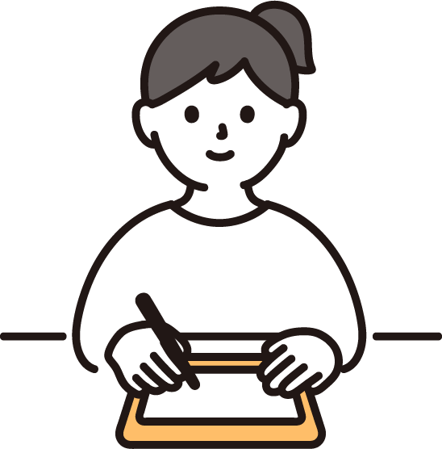

わたしのこと
田中 愛唯（たなか あい）
小さいころから絵を描くのが好きでした。
仕事を辞めたことをきっかけに職業訓練校のWebクリエイター科２に応募。
２０２５年３月～８月の６か月間、Webに関するスキルを学びました。
作品紹介
ここに動画・ポスター・バナーなどの内容を載せます
お問い合わせ
下記のメールアドレスにお気軽にご連絡ください。
田中 愛唯（たなか あい）
小さいころから絵を描くのが好きでした。
仕事を辞めたことをきっかけに職業訓練校のWebクリエイター科２に応募。
２０２５年３月～８月の６か月間、Webに関するスキルを学びました。
ここに動画・ポスター・バナーなどの内容を載せます
下記のメールアドレスにお気軽にご連絡ください。